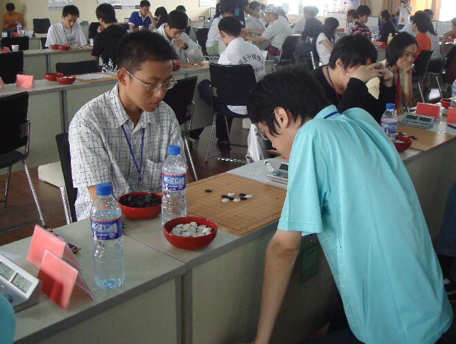

决战团体，烽烟四起——傅亮全团赛小结（下篇）
#1 决战团体，烽烟四起——傅亮全团赛小结（下篇）作者：罗马王子 发表时间：2008-8-7 23:14:23
（四）征战全团赛

6月7日
由于第一天要举行开幕式，我们早早就来到了赛场。我看到薛文曦从远处走过来，于是上前跟他交谈了几句。进入赛场之后，我发现我的对手竟然不是昨晚准备的吴刚，而是刘昊，原来他们上了替补。牛牛的对手变成了吴刚，我和牛牛简单交流了一下，他点点头，看来没什么问题了。再看四台陈靖面对的是一个女孩子，我对他也比较放心。开幕式结束之后，选手有几分钟的休息时间。这时，狮子妹妹向我发出了预警信号，她告诉我李睿凡可能会把这个骗教给河北的一些队伍，而邯郸队正好是河北的队伍。开局时我陷入沉思，我看到旁边的陈靖交换了斜月局，以他的进攻能力拿下这盘应该不是问题。而且恒星的那个骗后面还是挺复杂的，临场不一定能走出来。于是我还是开了恒星，对手自然选择交换，两打点让我很意外。我选择了可以套八卦的那个点，9手他飞了一手，让我感觉有些难受。防到12手，我镇定了许多，我知道这盘他已经杀不出来了，取胜只是时间的问题了。旁边的陈靖已经获胜了，真是强悍！简单交换了几手之后，他上面已经没什么棋了，我20手连守带攻，他在上面强行攻了几手之后，29手反身过来防守，30手做棋已经是必胜了。35手之后，白简单VCF
［此帖子已被 有志青年 在 2012-6-11 17:21:31 编辑过］
#2 Re:决战团体，烽烟四起——傅亮全团赛小结（下篇）作者：南京小飞机 发表时间：2008-8-8 9:04:15
晚上，我还帮徒弟赵敏分析了一下他今天的对局，感觉他进步确实很大，看来这些日子他下了不少工夫。
#3 Re:决战团体，烽烟四起——傅亮全团赛小结（下篇）作者：南京小飞机 发表时间：2008-8-8 9:21:50
师傅好棒！！伟大的师傅 ShowPost.asp?ThreadID=4331
ShowPost.asp?ThreadID=4331#4 Re:决战团体，烽烟四起——傅亮全团赛小结（下篇）作者：紫菊 发表时间：2008-8-8 9:46:45
非常非常的期待王子可以用英文翻译一下全篇文章。
王子的英文和棋艺一样的好~
·
#5 Re:决战团体，烽烟四起——傅亮全团赛小结（下篇）作者：紋枰論道 发表时间：2008-8-8 18:40:33
 Prince写的真好，真希望明年还可以并肩作战。。。
Prince写的真好，真希望明年还可以并肩作战。。。
#6 Re:决战团体，烽烟四起——傅亮全团赛小结（下篇）作者：百医天使 发表时间：2008-8-8 21:50:54
我们几个队友都互相激掌表示庆贺
这个字表达的意思真多！！
#7 Re:Re:决战团体，烽烟四起——傅亮全团赛小结（下篇）作者：狮子何必吼 发表时间：2008-8-8 22:54:47
引用：嘿嘿,明年偶不当炮灰了!大亮+U,道道+U,大家+U
原文由 紋枰論道 发表于 2008-8-8 18:40:33 :
#8 Re:决战团体，烽烟四起——傅亮全团赛小结（下篇）作者：南京小飞机 发表时间：2008-8-9 8:37:22
+U 他们不一定看懂耶
#9 Re:决战团体，烽烟四起——傅亮全团赛小结（下篇）作者：自来自去 发表时间：2009-4-19 8:29:19
呵呵#10 Re:决战团体，烽烟四起——傅亮全团赛小结（下篇）作者：南京小飞机 发表时间：2009-4-19 10:23:48
有志大哥呢 这帖子中毒了 啊
［ 有志青年 于 2009-4-19 10:37:56 时花20金币送鲜花一朵］
#11 Re:决战团体，烽烟四起——傅亮全团赛小结（下篇）作者：岳麓小棋后 发表时间：2009-4-19 15:36:56
呵呵，罗马王子风流倜傥哈